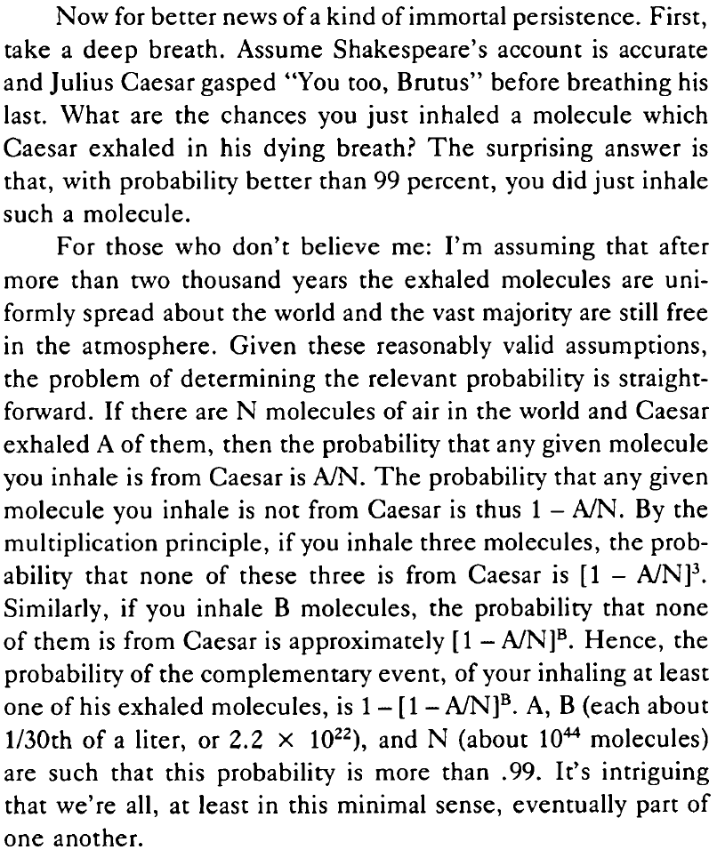

03: Problema do aniversário, propriedades
Exercícios do livro (cap. 1)
26
Amostra com reposição de tamanho \(1000\) a partir de uma população de tamanho \(1\) milhão. Cada pessoa tem a mesma probabilidade de ser escolhida.
Qual a probabilidade de pelo menos uma pessoa ser escolhida mais de uma vez?
Usando \(N = 1.000.000\) e \(n = 1.000\):
\[ \begin{aligned} P &= 1 - P(\text{ninguém escolhido mais de uma vez}) \\ &= 1 - \frac{\binom{N}{n} \cdot n!}{N^n} \\ &= 1 - \frac{N}{N} \cdot \frac{N - 1}{N} \cdot \frac{N - 2}{N} \cdot \cdots \cdot \frac{N - n + 1}{N} \end{aligned} \]
Na verdade, esta é a mesma distribuição do problema dos aniversários, com \(N\) dias e \(n\) pessoas.
Para \(N\) grande e \(n\) pequeno, a probabilidade \(P\) de pelo menos uma pessoa ser escolhida mais de uma vez se aproxima de \(0\):
| N | n | P |
|---|---|---|
| 1.000.000 | 1.000.000 | 1,0000000 |
| 1.000.000 | 100.000 | 1,0000000 |
| 1.000.000 | 10.000 | 1,0000000 |
| 1.000.000 | 1.000 | 0,3932670 |
| 1.000.000 | 100 | 0,0049379 |
| 1.000.000 | 10 | 0,0000450 |
| 1.000.000 | 1 | 0,0000000 |
27
Função de hash \(h(x)\).
\(k\) telefones armazenados em \(n\) posições, todas com a mesma probabilidade.
Qual a probabilidade de colisão?
De novo, pbirthday(k, n).
57
Existem \(10^{44}\) moléculas na atmosfera.
No seu último suspiro, César respirou \(10^{22}\) delas (sem reposição).
Você respira \(10^{22}\) moléculas agora (com reposição).
Qual a probabilidade de que pelo menos uma molécula sua tenha sido de César também?
A resposta é \(1 - P(\text{nenhuma molécula sua foi de César})\).
Para calcular \(P(\text{nenhuma molécula sua foi de César})\):
Todas as respiradas possíveis (com reposição, com ordem): \(\left( 10^{44} \right)^{\left(10^{22} \right)}\).
Todas as respiradas sem moléculas de César (com reposição, com ordem): \(\left( 10^{44} - 10^{22} \right)^{\left(10^{22} \right)}\).
-
Daí,
\[ \begin{aligned} P(\text{nenhuma molécula sua foi de César}) &= \frac{\left( 10^{44} - 10^{22} \right)^{\left(10^{22} \right)}} {\left( 10^{44} \right)^{\left(10^{22} \right)}} \\ &= \left( \frac{10^{44} - 10^{22}}{10^{44}} \right)^{(10^{22})} \\ &= \left( 1 - \frac{1}{10^{22}} \right)^{(10^{{22}})} \\ &\approx e^{-1} \end{aligned} \]
-
Logo, a probabilidade procurada é aproximadamente
\[ 1 - e^{-1} \approx 0{,}63 \]
-
Formulação original em PAULOS, John Allen4:

61
\(n\) passageiros para \(n\) assentos.
Passageiro \(k\) inicialmente alocado no assento \(k\).
MAS Passageiro \(1\) decide escolher assento ao acaso (cada assento com a mesma probabilidade).
Então, cada passageiro seguinte se senta no assento inicialmente alocado para ele, se disponível; caso contrário, escolhe um assento ao acaso.
Qual a probabilidade de que o último passageiro se sente no assento alocado para ele?
Possibilidades
O último passageiro só pode se sentar no lugar \(1\) ou no lugar \(n\).
Aliás, isto é um caso específico de um fenômeno mais geral, Qualquer que seja o valor de \(n\):
O passageiro \(3\) nunca fica no assento \(2\): ou o passageiro \(1\) pegou, ou ficou livre para o passageiro \(2\) (que é obrigado a pegá-lo).
O passageiro \(4\) nunca fica nos assentos \(2\) nem \(3\): ou o passageiro \(1\) pegou o assento \(3\), ou aconteceu um dos casos acima e o assento \(3\) ficou livre para o passageiro \(3\) (que é obrigado a pegá-lo).
O passageiro \(5\) nunca fica nos assentos \(2\) nem \(3\) nem \(4\): ou o passageiro \(1\) pegou o assento \(4\), ou aconteceu um dos casos acima e o assento \(4\) ficou livre para o passageiro \(4\) (que é obrigado a pegá-lo).
etc.
Seguindo o raciocínio, chegamos à conclusão de que o passageiro \(n\) só pode ocupar o assento \(1\) ou o assento \(n\).
Probabilidades
Examinando exemplos com \(n \in \{3, 4, 5\}\), a probabilidade parece ser \(1/2\).
Por quê?
-
O assento do passageiro \(n\) depende da pergunta (no momento em que o passageiro \(n\) vai se sentar)
“O assento \(1\) já foi tomado?”
cuja resposta é oposta à da pergunta
“O assento \(n\) já foi tomado?”
Com que probabilidade a resposta a esta última pergunta é sim?
Em todos os passos anteriores, como explicado acima em “possibilidades”, os assentos \(1\) e \(n\) sempre estão disponíveis para qualquer passageiro que vá escolher um assento ao acaso.
Como todos os assentos têm a mesma probabilidade de ser escolhidos, a probabilidade de o assento \(1\) estar tomado é igual à probabilidade de o assento \(n\) estar tomado.
Logo, a probabilidade de o passageiro \(n\) acabar no assento \(n\) é \(1/2\).
62
Problema do aniversário com probabilidades diferentes:
Seja \(\vec p = (p_1, p_2, \ldots, p_{365})\) o vetor das probabilidades de alguém nascer em algum dos dias do ano.
-
Seja
\[ e_k(x_1, \ldots, x_n) = \sum_{1 \leq j_1 < j_2 < \cdots < j_k \leq n} \!\!\!\!\!\!\!\!\!\!\!\!\!\! x_{j_1} \ldots x_{j_k} \]
o \(k\)-ésimo polinômio simétrico elementar sobre as variáveis \(x_1, \ldots, x_n\).
Por exemplo, \[ \begin{aligned} e_1(x_1, x_2, x_3) &= x_1 + x_2 + x_3 \\ e_2(x_1, x_2, x_3) &= x_1x_2 + x_1x_3 + x_2x_3 \\ e_3(x_1, x_2, x_3) &= x_1x_2x_3 \\ \end{aligned} \]
- Seja \(k \geq 2\). Qual a probabilidade de pelo menos uma coincidência de aniversários em termos de \(\vec p\) e de um polinômio simétrico elementar?
A probabilidade de não haver coincidência é a soma das probabilidades de todos os eventos da forma
As pessoas \(1, 2, \ldots k\) nasceram em dias diferentes \(j_1, j_2, \ldots, j_k\).
Por exemplo, para \(k = 3\), a soma será
\[ 3! \cdot (p_1 p_2 p_3 + p_1 p_2 p_4 + \cdots + p_{363} p_{364} p_{365}) \]
Isto é igual a
\[ k! \cdot e_k(\vec p) \]
A probabilidade de pelo menos uma coincidência é \[ 1 - k! \cdot e_k(\vec p) \]
- Quando \(p_j = 1/365\) para todo \(j\), esta probabilidade é mínima.
No caso em que \(p_j = p = 1/365\) para todo \(j\), temos
\[ \begin{aligned} 1 - k! \cdot e_k(\vec p) &= 1 - k! \cdot \binom{365}{k} \cdot p^k \\ &= 1 - \frac{365 \cdot 364 \cdot \cdots \cdot (365 - k + 1)}{365^k} \end{aligned} \]
Neste caso, o valor de \(e_k(\vec p)\) é máximo.
-
Considere a desigualdade
\[ \frac{x + y}{2} \geq \sqrt{xy} \]
que vem do raciocínio
\[ \begin{aligned} (x + y)^2 - 4xy = (x - y)^2 \geq 0 \implies & (x + y)^2 - 4xy \geq 0 \\ \implies & (x + y)^2 \geq 4xy \\ \implies & \frac{(x + y)^2}{4} \geq xy \\ \implies & \frac{x + y}{2} \geq \sqrt{xy} \end{aligned} \]
Defina \(\vec r = (r_1, \ldots, r_{365})\) tal que
\(r_1 = r_2 = (p_1 + p_2)/2\),
\(r_j = p_j\) para \(3 \leq j \leq 365\).
Verifique que \[ \begin{aligned} e_k(x_1, \ldots, x_n) &= x_1 x_2 e_{k-2}(x_3, \ldots x_n) \;+ \\ &\phantom{{}={}} (x_1 + x_2) e_{k-1}(x_3, \ldots x_n) \;+ \\ &\phantom{{}={}} e_{k}(x_3, \ldots x_n) \end{aligned} \]
e use a desigualdade para mostrar que, quando \(\vec p \neq \vec r\),
\[ P( \text{coincidência} \mid \vec p) > P( \text{coincidência} \mid \vec r) \]
-
Observe que
\[ \frac{x + y}{2} = \sqrt{xy} \implies x = y \]
Ou seja, quando \(x \neq y\), a desigualdade é estrita.
-
Para o vetor \(\vec p\):
\[ \begin{aligned} & P( \text{coincidência} \mid \vec p) \\ &= 1 - k! \cdot e_k(\vec p) \\ &= 1 - k! \cdot \left[ p_1p_2 \cdot e_{k-2}(p_3, \ldots p_n) + (p_1 + p_2) \cdot e_{k-1}(p_3, \ldots p_n) + e_{k}(p_3, \ldots p_n) \right] \end{aligned} \]
-
Para o vetor \(\vec r\):
\[ \begin{aligned} & P( \text{coincidência} \mid \vec r) \\ &= 1 - k! \cdot e_k(\vec r) \\ &= 1 - k! \cdot \left[ \frac{(p_1 + p_2)^2}{4} \cdot e_{k-2}(p_3, \ldots p_n) + (p_1 + p_2) \cdot e_{k-1}(p_3, \ldots p_n) + e_{k}(p_3, \ldots p_n) \right] \end{aligned} \]
A única diferença está no primeiro fator dentro dos colchetes.
-
Pela desigualdade:
\[ \frac{p_1 + p_2}{2} \geq \sqrt{p_1p_2} \implies \frac{(p_1 + p_2)^2}{4} \geq p_1p_2 \]
Conclusão: para todo vetor \(\vec p\) de probabilidades, é possível preservar ou diminuir a probabilidade de uma coincidência substituindo quaisquer \(2\) de suas componentes pelo valor da média aritmética delas. Assim, o vetor que minimiza a probabilidade precisa ter todas as suas componentes iguais.